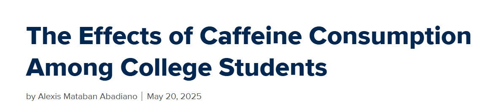
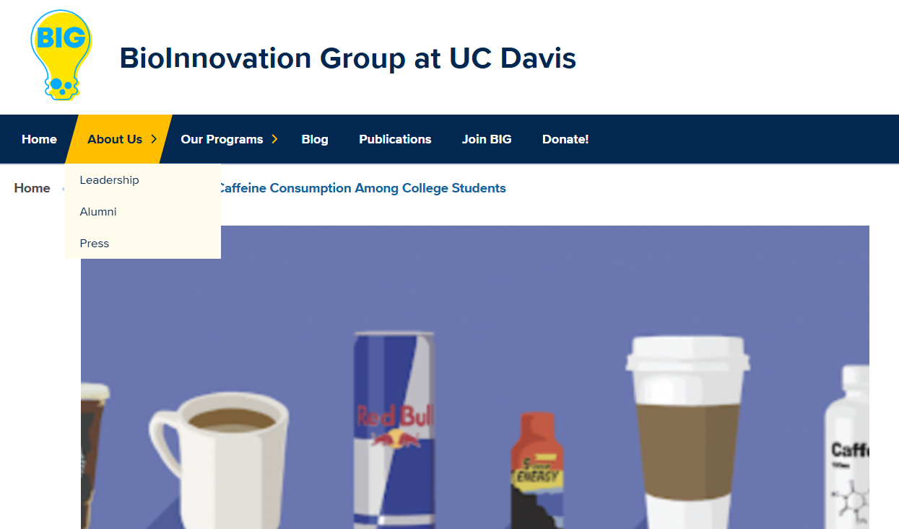
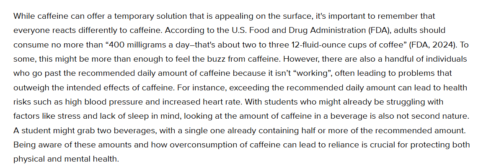
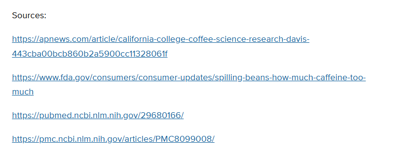
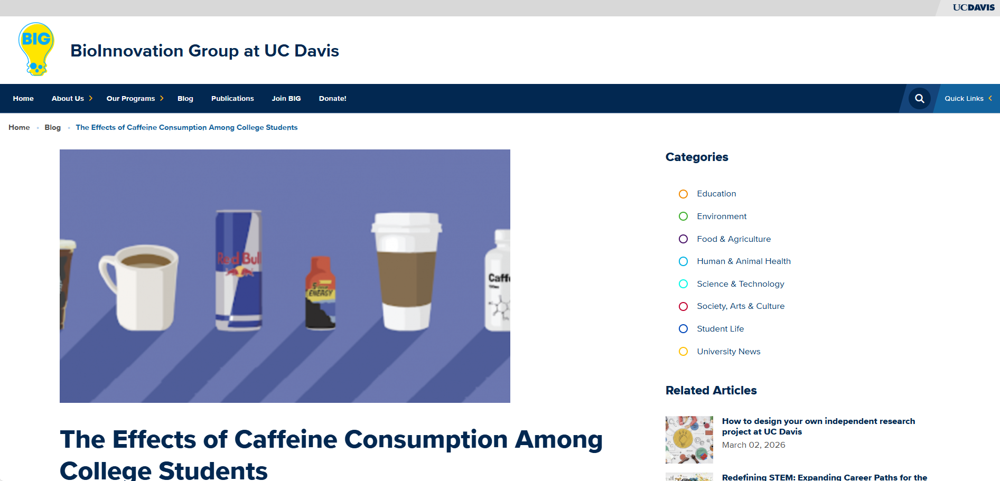
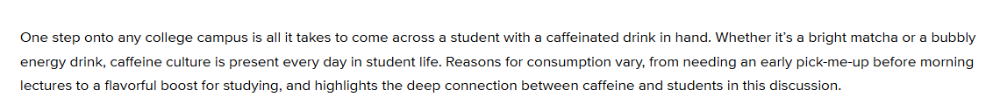
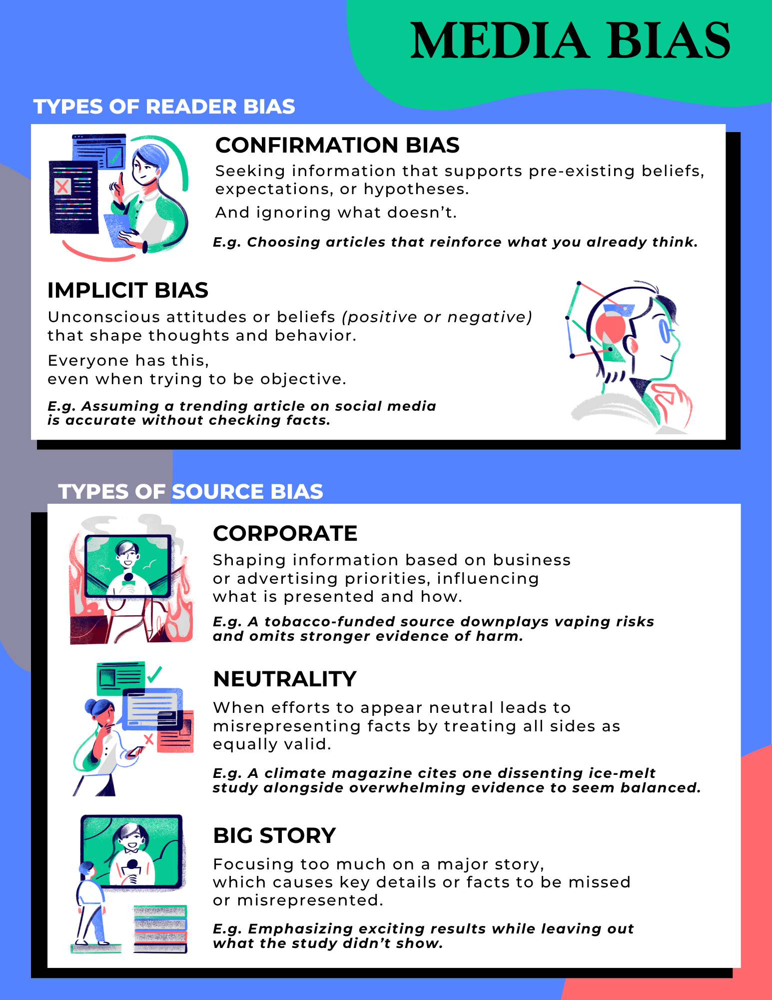

Before You Start
When you finish this tutorial, a link to the COMP 1500 quiz will appear on the completion page.
This quiz is REQUIRED for this class. Do not skip it.
Work through the tutorial, complete the quiz, and you are done. The questions in this tutorial are not the quiz.
Currency
Source: Article title, author, and publication date.

Ask yourself:
How does the publication date affect whether this is a good source for research about caffeine and college students?
Authority
Source: Author listed on the UC Davis BioInnovation Group website. Use lateral reading to learn more.

Learn more by visiting the leadership menu on the website:

Ask yourself:
What information on this webpage helps you decide if the author or organization is trustworthy?
Relevance
Source: This paragraph discusses caffeine overconsumption health risks among students.

Ask yourself:
How does this article connect to college student health or daily life?
Documentation
Source: This article includes a sources list linking to government sites and academic databases.

Ask yourself:
What evidence shows the author researched the topic and supported their claims with sources?
Information Type
Source: The navigation menu shows this article under a "Blog" section.

Ask yourself:
What type of source is this article, and is it appropriate for your assignment?
Objectivity
Source: Read the language and tone carefully. Does the author present information factually or lean toward persuasion?

Ask yourself:

Media bias appears in many forms. Understanding the difference between reader bias, like confirmation bias, and source bias, like corporate or political bias, helps you evaluate whether a source is presenting information fairly or pushing an agenda.
Does the article appear mostly factual and balanced, or does it seem biased or opinion-based?
REQUIRED: Take the COMP 1500 quiz now:
Take the COMP 1500 Quiz →Well done, you completed CARDIO!
You have worked through all six CARDIO criteria. Use these questions every time you find a source to determine whether it is credible, appropriate, and useful for your research.
Need to review? Use the button below to start over.